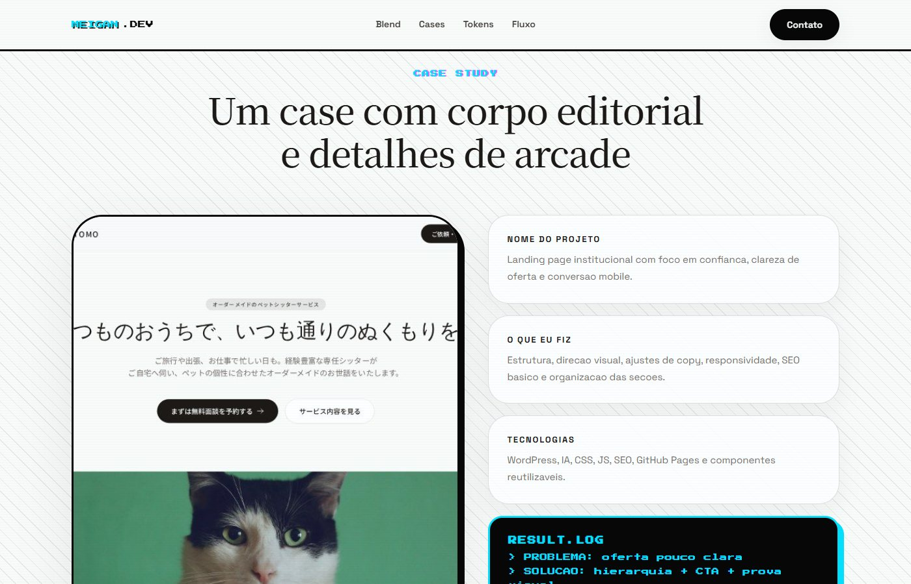

Primeira dobra
01
Serifas amplas recebem pequenos acentos de arcade.
A mensagem principal mantém a calma editorial, enquanto tipografia pixel e cores pontuais sinalizam a segunda influência.
A terceira proposta combina a leitura serena do estudo editorial com a energia visual do retrô: base neutra, imagens amplas e acentos de arcade.
A estrutura editorial sustenta os textos e as imagens. A linguagem retrô aparece em detalhes: acentos coloridos, pequenos elementos pixelados e contrastes pontuais. A demonstração registra como essas escolhas podem conviver sem competir pela atenção.
O sistema parte de uma base legível e reserva os recursos de arcade para os pontos de destaque.
A mensagem principal mantém a calma editorial, enquanto tipografia pixel e cores pontuais sinalizam a segunda influência.

A proposta reserva o grid, a cor e os chips retrô para destaque; a paleta neutra e os títulos serifados seguram a leitura.

O exemplo de case usa imagem, contexto e texto organizados; as referências de arcade aparecem como apoio à identidade.
Juntar personalidade visual e apresentação clara de projetos sem perder a legibilidade.
Usar a composição editorial como base e limitar os elementos retrô a acentos, chips e detalhes gráficos.
Uma terceira proposta navegável que mostra como as duas direções anteriores podem se complementar.
Compare as propostas de origem ou abra a demonstração completa do estudo híbrido.